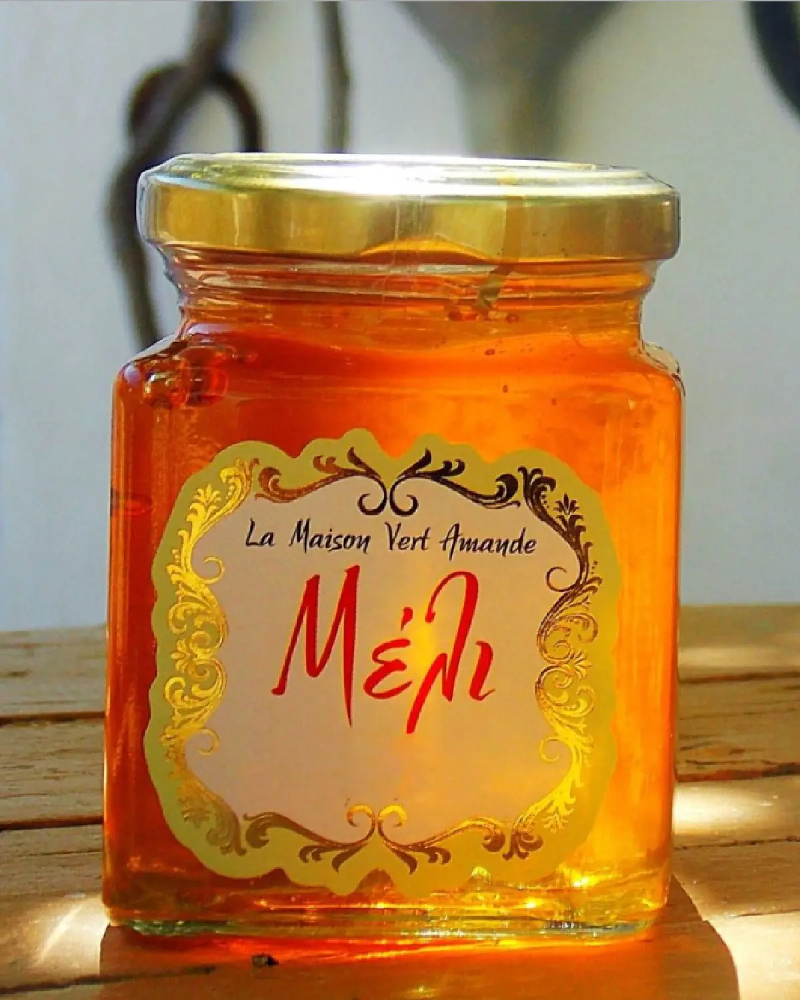
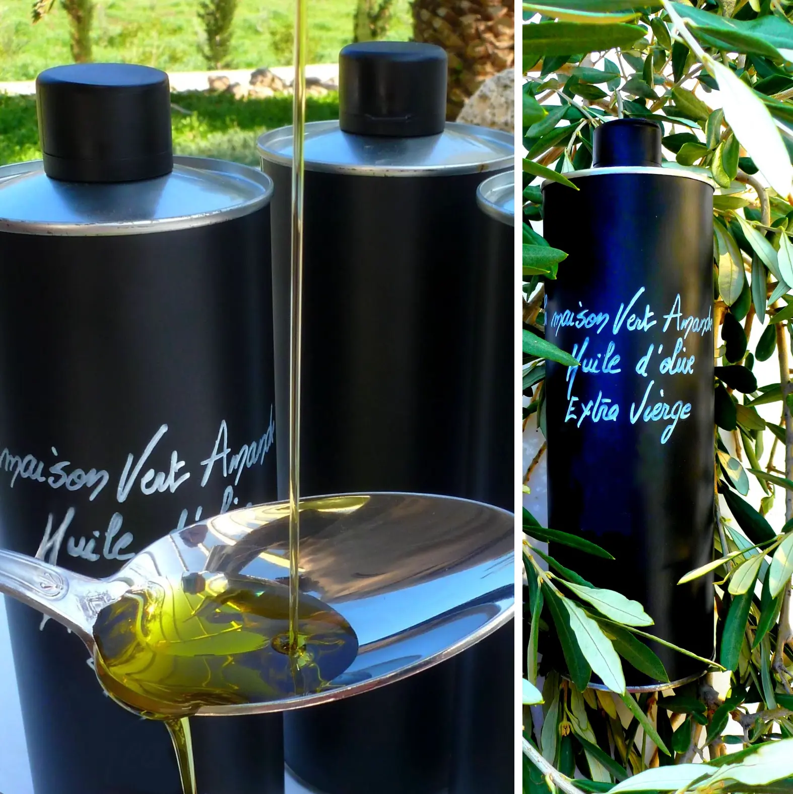

ΤΑ ΠΡΟΪΟΝΤΑ ΜΑΣ
Παραγωγοί
από την αρχή ως το τέλος
Ό,τι βλέπετε σε αυτή τη σελίδα καλλιεργείται, συλλέγεται και εμφιαλώνεται στη δική μας γη, στην Πετροθάλασσα.

Μέλι
Συλλέγεται με φροντίδα και μπαίνει στο βάζο με το χέρι στην Πετροθάλασσα από τον Γιώργο, μελισσοκόμο για πάνω από 40 χρόνια. Ποτέ θερμασμένο.
ΠΕΡΙΣΣΟΤΕΡΑ
Ελαιόλαδο
Εξαιρετικό παρθένο ελαιόλαδο από τον δικό μας ελαιώνα, που συλλέγεται κάθε χειμώνα και πωλείται απευθείας από τον παραγωγό σε εσάς.
ΠΕΡΙΣΣΟΤΕΡΑ
Μαρμελάδα
Φτιαγμένη στο χέρι σε μικρές ποσότητες από φρούτα που μαζεύονται την ίδια μέρα, χωρίς συντηρητικά ή πρόσθετα.
ΠΕΡΙΣΣΟΤΕΡΑ
Σπαθόλαδο
Παραδοσιακό λάδι από βαλσαμόχορτο, που αφήνεται να μουλιάσει στον ήλιο για 40 μέρες στο δικό μας ελαιόλαδο.
ΠΕΡΙΣΣΟΤΕΡΑ